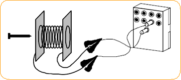
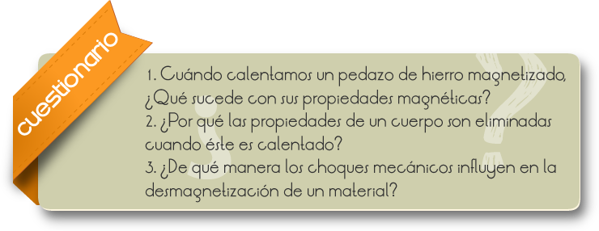

Introducción
La magnetización M de una partícula es la suma de los 'momentos magnéticos' de cada átomo por unidad de volumen.
M describe el estado magnético de un material - o sea como responde el material a un campo magnético. Es una importante propiedad de materiales en la corteza terrestre.
Los materiales adquieren una componente de magnetización en la presencia de un campo magnético. Para campos pequeños, del orden del campo terrestre, la magnetización inducida es proporcional al campo aplicado:
M=k*H
Donde k es una constante a dimensional llamada susceptibilidad magnética. La magnitud de la susceptibilidad difiere por un factor de 4 entre ambos sistemas de unidades (SI y cgs).
Objetivos
Mostrar algunas formas de magnetización y determinar factores que influyen en la desmagnetización de un material.
PARTE l
1) Preparar el solenoide para ser conectado en la fuente del Autolabor.

2) Observación: no mantenga, el solenoide conectado a la fuente durante mucho tiempo.
3) Coloque el clavo dentro del solenoide y aguarde algún tiempo.
4) Aproxime el clavo de la limalla de hierro y verifique si está magnetizado.
5) Someta este cuerpo a los choques mecánicos y compruebe si el cuerpo desmagnetizó, aproximándolo a la limalla de hierro.
6) Magnetice el cuerpo nuevamente y sométalo a la acción del calor, utilizándose de la lamparilla.
7) Aproxime la limalla de hierro.
PARTE ll
1. Tome un pedazo de hierro e imántelo, por frotación, con un imán.
2. Repita los procedimientos 3, 4 y 5

Comentarios
Cuando un material ferro magnético (un pedazo de hierro) sufre magnetización, sus dominios se alinean, ocurriendo el acoplamiento de muchos dominios, resultando en un imán único, de mayores dimensiones y campo magnético intenso. Por otro lado, cuando este pedazo de hierro sufre desmagnetización, los polos N y S de sus dominios se atraen recíprocamente, sin ninguna orientación predominante, haciendo con que el campo magnético resultante sea débil.
Caso sometamos un material magnetizado, a los choques mecánicos, veremos que el mismo perderá sus propiedades magnéticas, lo mismo ocurriendo cuando lo calentamos.
Tanto en uno como en otro caso, provocamos un aumento general en la vibración de los átomos y dominios del material y, en consecuencia, favorecemos el desaliño de sus dominios magnéticos. Como resultado promovemos su desmagnetización.
A la temperatura anteriormente mencionada, de la cual un material pierde sus propiedades magnéticas es denominada "Temperatura Curie" y corresponde al límite práctico en que se puede utilizar un imán en un dispositivo cualquiera (eléctrico, por ejemplo).
Algunos materiales son difíciles de magnetizar, mas, una vez imantados difícilmente pierden la imantación – los imanes son permanentes como el acero duro. Ya otros materiales son de imantación prácticamente instantánea, pero también la pierden con gran facilidad (como en el caso del acero dulce) y ese es muy usado en los electroimanes, en que el magnetismo necesita ser activado o desactivado rápidamente (llaves magnéticas, por ejemplo).